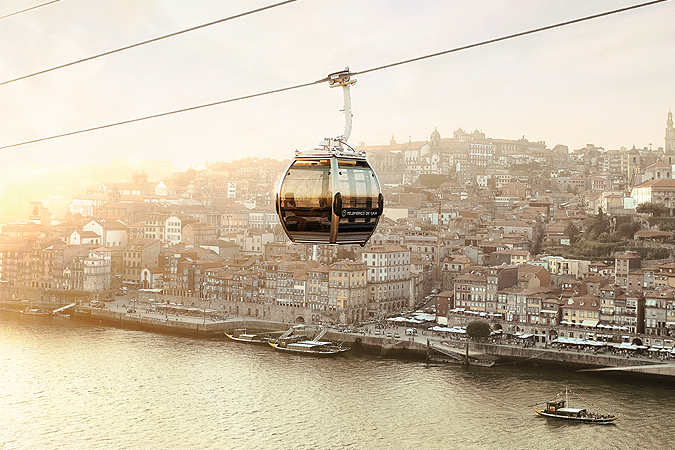
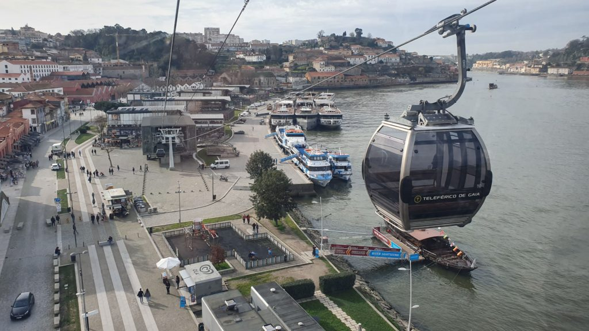
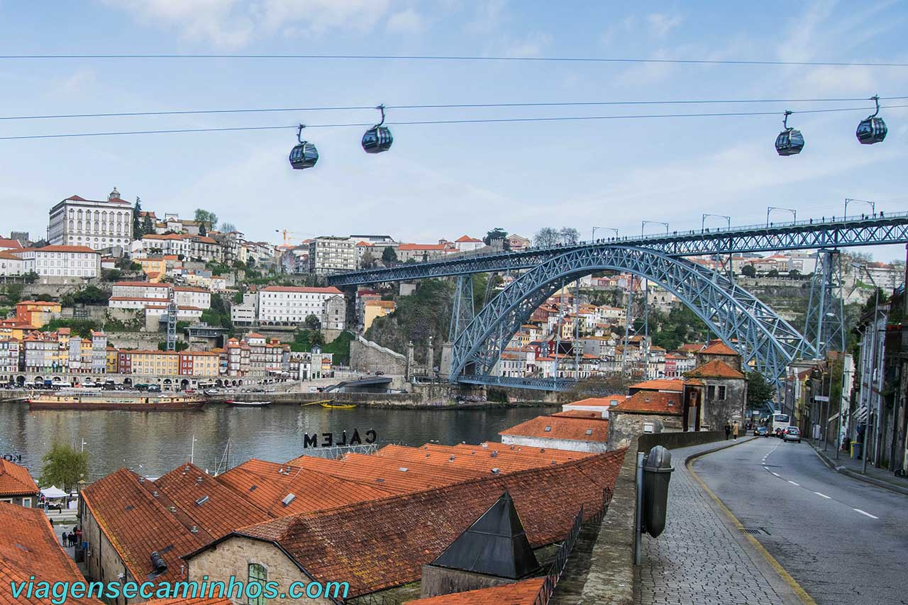
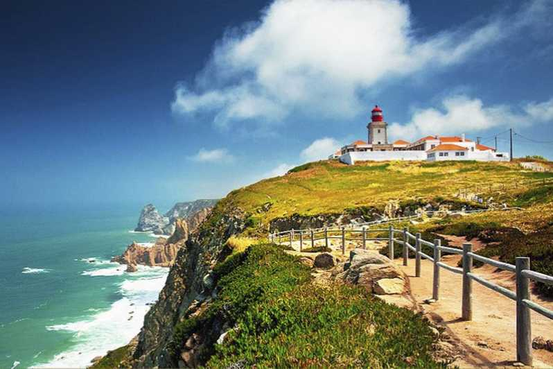
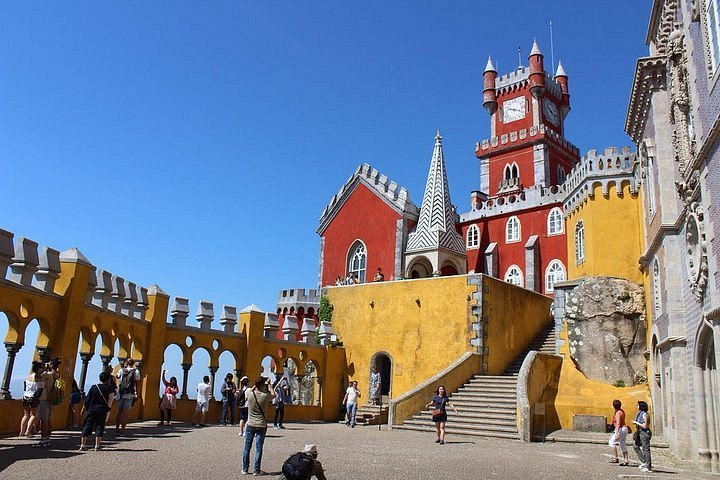
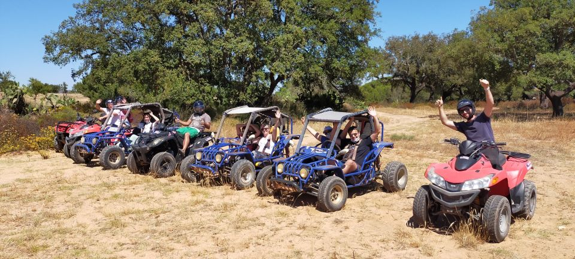
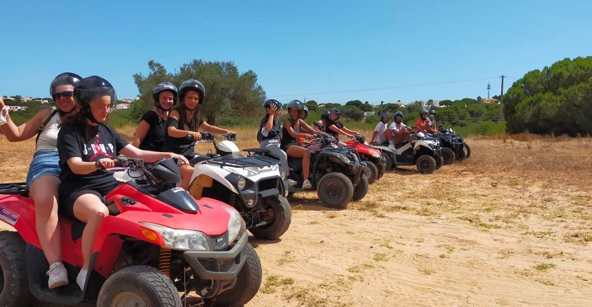
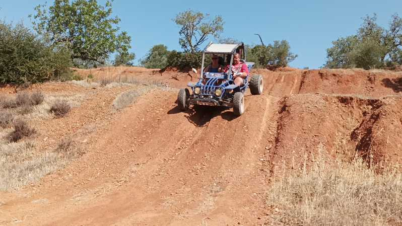
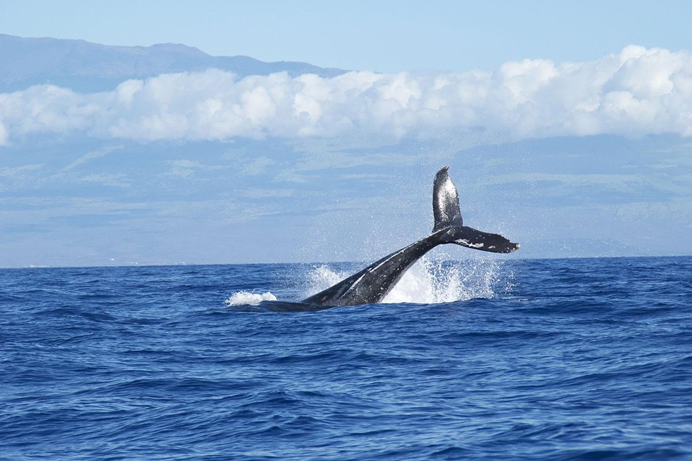
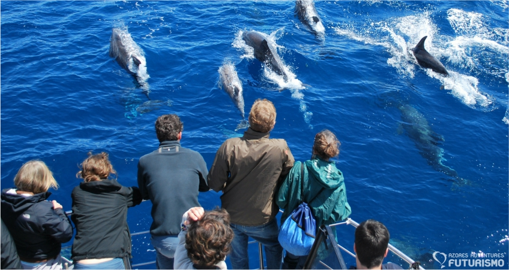

Skylink Turismo
Home
Preços
Imagens
Imagens
Teleférico do Porto



Sintra - Excursão particular em Cascais


Albufeira: Excursão Off-Road no Algarve de Buggy



Observação de Baleias e Golfinhos nos Açores

